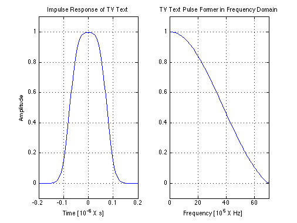
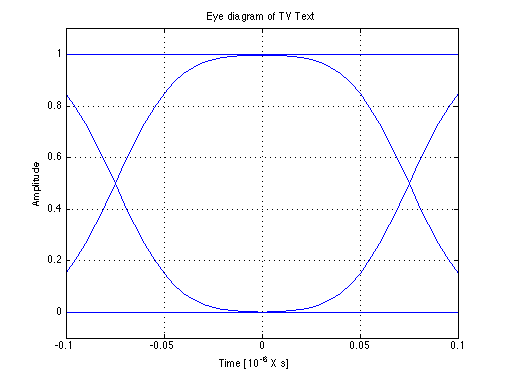

Eyediagram of TV Text
Copyright 2007 Telecommunications Lab
T = 3/20; % Symbol time interval [s]. Fs =30/T; % Sampling frequency t = -2*T:1/Fs:2*T; % Time vector (sampling intervals) t = t+0.00000001; % Otherwise, the denominator would be zero at t=0 f= 0:1/Fs:2; fg=5.5; g = .5*erf(sqrt(2/log(2))*pi*fg*(t+.5*T))-.5*erf(sqrt(2/log(2))*pi*fg*(t-.5*T)); % Plotting subplot(1,2,1);plot(t,g,'b','LineWidth',1.5);hold on; grid on;xlabel('Time [10^{-6} X s]');ylabel('Amplitude'); axis([-0.2 .2 -.1 1.1]); title('Impulse Response of TV Text'); G=abs(fft([g zeros(1,2048-length(g))])); % Plotting subplot(1,2,2);plot(G/max(G),'b','LineWidth',1.5) title('TV Text Pulse Former in Frequency Domain'); axis([0 70 -.1 1.1]);xlabel('Frequency [10^{5} X Hz]') grid on;
%Eye diagram g1 = .5*erf(sqrt(2/log(2))*pi*fg*(t+.5*T+T))-.5*erf(sqrt(2/log(2))*pi*fg*(t-.5*T+T)); g2 = .5*erf(sqrt(2/log(2))*pi*fg*(t+.5*T-T))-.5*erf(sqrt(2/log(2))*pi*fg*(t-.5*T-T)); g3=g1+g2+g; %Plotting subplot(1,1,1); plot(t,g,'b','LineWidth',1.5);hold on; grid on;xlabel('Time [10^{-6} X s]');ylabel('Amplitude'); axis([-.1 .1 -.1 1.1]); title('Eye diagram of TV Text'); plot(t,g1,'b','LineWidth',1.5);hold on;plot(t,g2,'b','LineWidth',1.5);hold on;plot(t,g3,'b','LineWidth',1.5); hold off;